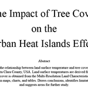

An analysis of the relationship between land surface temperature and tree cover for the City of San Jose, Santa Clara County, USA. Land surface temperatures are derived from Landsat 8 imagery. Tree cover is obtained from the Multi-Resolution Land Characteristics Consortium. Presents results in maps, charts, and tables. Draws conclusions, identifies limitation of this study, and suggests areas for further study.